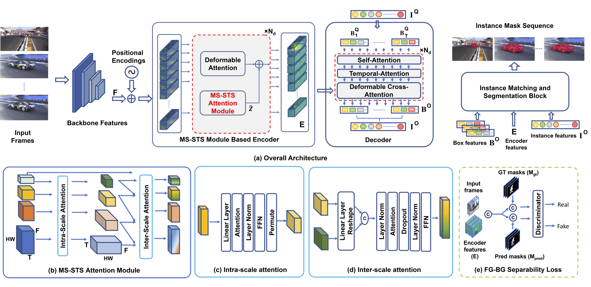
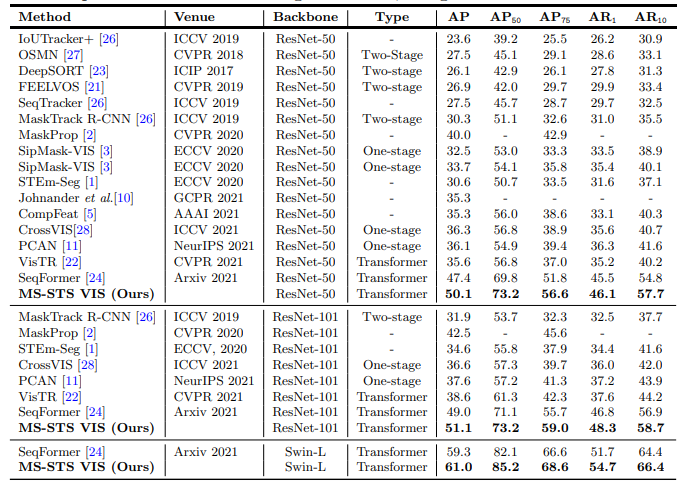

We proposed a transformer-based video instance segmentation framework, named MS-STS VIS, which comprises a novel multi-scale spatio-temporal split attention (MS-STS) module to effectively capture spatio-temporal feature relationships at multiple scales across frames in a video. We further introduced an auxiliary discriminator network during training that strives to enhance fg-bg separability within the multi-scale spatio-temporal feature space. Our MS-STS VIS specifically tackles target appearance deformations due to real-world challenges such as, scale variation, aspect-ratio change and fast motion in videos. Our extensive experiments on two datasets reveal the benefits of the proposed contributions, achieving state-of-the-art performance on both benchmarks.
Our Method
(a) Our MS-STS VIS architecture comprises a backbone, a transformer encoder-decoder and a instance matching and segmentation block. Here, our key contributions are: (i) a novel MS-STS attention module in the encoder to capture spatio-temporal feature relationships at multiple scales across frames, (ii) a temporal attention block in the decoder for enhancing the temporal consistency of the box queries and (iii) an adversarial loss for enhancing foreground-background (fg-bg) separability. Specifically, the MS-STS attention module (b) attends to the input backbone features by employing intra- and inter-scale temporal attentions to generate enriched features which are then fused with standard baseline features. While the intra-scale temporal attention block (c) enriches features across frames within a given scale, its inter-scale counterpart (d) progressively attends to multiple spatial scales across frames to obtain spatio-temporally enriched features. These enriched features are further improved using an adversarial loss (e) to enhance fg-bg separability. The resulting encoder features along with the temporally consistent instance features from the decoder are used within the matching and segmentation block for the video instance mask prediction.
Quanlitative Results on Youtube-VIS 2019-2021 validation set.
Qualitative results obtained by our MS-STS VIS framework on seven example videos in the Youtube-VIS 2019 & 2021 val set. Our MS-STS VIS achieves promising video mask prediction in various challenging scenarios including, fast motion, scale change, aspect-ratio change, multiple instances of same class.
Quantative Results on Youtube-VIS 2019 validation set.
State-of-the-art comparison on YouTube-VIS 2019 val set. Our MRSTS VIS consistently outperforms the state-of-the-art results reported in literature. When using the ResNet-50 backbone, MS-STS VIS achieves overall mask AP score of 50.1% with an absolute gain of 2.7% over the best existing SeqFormer, while being comparable in terms of model size and speed (SeqFormer: 11 FPS vs. Ours: 10 FPS). Similarly, when using the ResNet-101 backbone, our MS-STS VIS achieves overall mask AP of 51.1%. Further, MS-STS VIS achieves the best accuracy reported on this dataset with a mask AP of 61.0% and outperforms SeqFormer with an absolute gain of 1.7%, using the same Swin-L backbone
Quantative Results on Youtube-VIS 2021 validation set.
State-of-the-art comparison on YouTube-VIS 2021 val set. All results are reported using the same ResNet-50 backbone. Our MS-STS VIS achieves state-of-the-art results with an overall mask AP of 42.2% and an absolute gain of 2.8% over the best existing SeqFormer at a higher overlap threshold of AP75.
More About Authors
Omkar Thawakar
Researcher, MBZUAI
Hisham Cholakkal
Assistant Professor, MBZUAI
Salman Khan
Associate Professor, MBZUAI
Sanath Narayan
Research Scientist, IIAI
Rao Muhammad Anwer
Assistant Professor, MBZUAI
Michael Felzberg
Professor, Linköping University
Jiale Cao
Assistant Professor, Tianjin University
Muhammad Haris Khan
Assistant Professor, MBZUAI
Fahad Shahbaz Khan
Associate Professor, MBZUAI